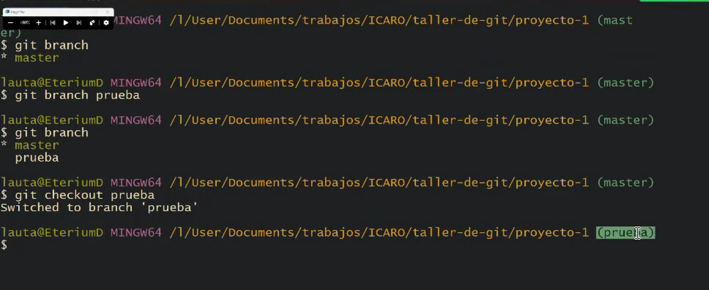

Mostrar tus datos como nombre y email.
git config --global user.name "John Doe"
git config --global user.email johndoe@example.com
Subir el repositorio en Github
Dentro de github elegimos un repositorio apretamos click en "Code" copiamos el link.
Una vez copiado entramos a git bash y escribimos: git clone "el link copiado ej: https://github.com/LautaroAndresSaez/taller-git-github"
Las ramas nos sirven para trabajar en grupo. Los cambios y registros que realicemos se hacen apartir de ciertos puntos y no cambiamos la rama original. Tenemos que verlo como un arbol del tronco sale version master y apartir de ramas salen otras versiones-
"git branch" Para ver la rama actual.
"git branch 'nombre de rama nueva'" Para crear una rama.
"git branch checkout 'nombre de rama'" Para cambiar mi posicion de rama actual a otra.
hacemos cambios añadimos y commiteamos en la rama nueva
volvemos a la rama original con 'git checkout master'
"git merge 'nombre de rama'" Hace que los datos de una rama pasen a la otra
'git push' cuando estamos en una rama nueva y nos aparece lo siguiente git push --set-upstream origin estilos.
copiamos y pegamos y la nueva rama debería aparecer en github
